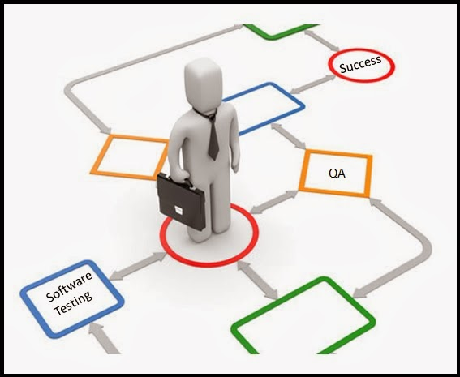

Importancia de las técnicas de pruebas de Software

Tomado de: pmoinformatica (2014). Pruebas de calidad de software: Recopilación. Recuperado de http://www.pmoinformatica.com/2014/02/pruebas-de-calidad-de-software.html
El proceso de pruebas de software es una fase muy importante en diversos modelos que hablan acerca del ciclo de vida de software. El uso de estas estrategias, busca generar mayor confianza en el proceso de pruebas de software realizadas por los desarrolladores. Tres cosas están comprobando a través de estos procesos: integridad del software con respecto a los requisitos funcionales; encontrar errores técnicos y asegurar que el software esté libre de errores; evaluar la usabilidad, el rendimiento, la seguridad, la localización, la compatibilidad y la instalación. Todas las empresas serias invertirán en un equipo de prueba y encontrarán expertos que serán capaces de detectar problemas y fallas en un producto de software.
Las pruebas de software son una gran herramienta para la optimización de negocios. Los beneficios de las pruebas de software son enormes y tienen un papel significativo en todo el negocio. Los cinco principales beneficios de las pruebas de software son:
Calidad
La calidad de su producto es alta, y eso es importante para el cliente. Lo más importante es que con la venta de productos de alta calidad, se crea una sólida reputación y una imagen de marca, cosas que son importantes a largo plazo.
Cliente satisfecho
El centro de cada negocio es un cliente feliz. Al vender un producto o servicio se debe ser consciente que todo no termina allí, si el producto no es confiable o no le conviene, el cliente debe invertir más dinero en arreglarlo o reemplazarlo, o puede solicitar un reembolso. Vale la pena producir un producto de mayor calidad desde el principio. Solo cuando hace las pruebas de software correctas, puede garantizar que su producto sea valioso y confiable.
Trayendo beneficio
Ofrecer un producto rigurosamente probado y comprobado de calidad significa tener respeto por sus clientes. Eso ayudará a retener clientes viejos y obtener otros nuevos. A largo plazo, ahorrará dinero porque está vendiendo un software que no necesita una reparación constante.
Experiencia de usuario
El software debe ser simple, comprensible y fácil de usar. Su experiencia asegurará que el software esté diseñado de una manera lógica e intuitiva.
Optimización de negocios
La optimización empresarial significa clientes más satisfechos, retención de clientes, menos costos de reparación de un producto, menos costos de servicio al cliente, mejor calidad y productos más confiables, mejor reputación e imagen de marca.